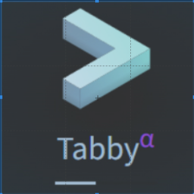

常用网站
常用网址导航
数码荔枝
软件商店- 专注于分享最新鲜优秀的正版软件
常用+数码+海外
常用网址导航
购物
常用网址导航
福利吧导航
常用网址导航
蓝点导航

常用网址导航
优设导航

百万设计师都在用的优设导航
站点导航
常用网址导航
导航站
常用网址导航
在线工具
加密、解密,下载链接转换,ico图标制作,字帖生成,照片压缩
UU在线工具
UU在线工具是一个免费便捷的在线工具站，无需下载，即来即用，简洁高效，让数据处理更简单和高效。
即时工具
即时工具-致力打造即用即走型在线工具箱
MikuTools
一个轻量的工具集合
TOOLFK
免费在线开发者工具,在线 Groovy 编译器工具。最佳在线编程编译器，使用我们的编译器免费编写和构建、在线运行代码。
工具集
常用网址导航
二维码/条形码扫描识别工具
二维码/条形码扫描识别工具
barcode-reader
在线二维码识别,从 TIF、PDF 和其他图像文档中读取 Code39、Code128、PDF417、DataMatrix、QR 和其他条形码。
VirusTotal
分析可疑文件、域、IP 和 URL，以检测恶意软件和其他漏洞，并自动与安全社区共享。
Virscan
恶意文件检测平台，保护我们的文件安全文件黑白，一扫便知. 文件上传. Hash查询. 将文件拖到此处或点击上传. 格式不限，支持上传大小不超过100MB 的文件进行检测。
一份爱小工具
田字格字帖生成器系列工具，自2013年上线以来，一致致力于为您提供更优质全面的中文学习资源和更好的用户体验，并坚持完全免费。
Similarsites
使用Similarsites.com 发现最好的网站并探索竞争对手和相关网站，该扩展使您能够浏览相关内容。
在线工具
常用网址导航
在线工具
常用网址导航
IT资讯
常用网址导航
TechTarget安全
TechTarget安全是一家企业级专业安全网站,专注于信息安全、安全软件、网络安全、Web安全、安全软件等领域,提供技术手册、专题、专家答疑等安全信息资料.
IT之家
常用网址导航
IT天空
新的十年，新的天空
电脑爱好者
关注科技新生活
少数派

效率工作,品质生活
CSDN

专业开发社区
中关村在线
中关村在线是大中华区商业价值受到认可和信赖的IT专业门户网站,提供手机,电脑等科技数码的资讯和行情报价.
电脑之家PChome
PChome电脑之家是中国优秀的IT资讯服务提供商之一,一直积极倡导'科技引领生活'理念,实现IT资讯与产品走近用户生活为目标.
IT168
IT168是中国最大的个人和企业IT产品选购、互动网站,每日提供最新的IT产品报价、促销行情、手机、平板、笔记本、相机和企业等50个频道提供最专业的产品选购和使用建议。
泡泡网
泡泡网 PCPOP.COM是3C产品“垂直互动网络媒体”，自2000年商业化运营以来始终致力于客户服务的价值创造与资讯传播。
51CTO
安全话题集合了网站安全、数据安全、应用安全、云安全、物联网安全、移动安全、终端安全等领域的新鲜业界资讯、前沿技术知识、典型应用案例以及产业发展态势。
卡饭论坛
是国内最著名的软件论坛,友善,热情,开放的讨论氛围，首屈一指,打造国内最好的软件交流平台！
十佳测评
推荐最好的产品
远景论坛

微客极客社区
中国手机论坛
专业、有态度的综合性手机论坛
知识屋
电脑技术吧_电脑技术知识_更实用的电脑技术网站
厘米天空
常用网址导航
Matters

致力搭建去中心化的寫作社群與內容生態
遨游今日
常用网址导航
简书
创作你的创作
启明星辰
无论是从物理网络、物理主机到虚拟网络、虚拟主机，还是从应用的关键服务模块到每个节点，启明星辰都已实现有效的防护和深入的监测，并在此基础上扩展了安全的维度，从防护 ...
新闻资讯
常用网址导航
新闻资讯
常用网址导航
人人影视
字幕组网站,美剧,日剧,韩剧,电影,资讯,下载
中国高清网
高清1080P是一重高清重编码格式，片源来自蓝光原盘，是目前主流的高清、超高清的重编码格式。
音范丝
音范丝是一个搜集、精选的高品质电影资源网站。
高清影视
高清电影网是专业领先的超高清下载平台，本着影视质量第一所有影视为超高清高清。
BD影视分享网
这里为您提供免费在线观看、迅雷下载和磁力链接资源，最新电影，经典电影下载，韩国电影下载，欧美电影
Ultra 4K
Ultra4K | 蓝光原盘电影迅雷免费下载，4K电影、蓝光电影、蓝光美剧、3D电影、4K蓝光纪录片、影视素材、4K高清影视
高清电影天堂
高清电影天堂，每天关注提供720p电影、1080p电影、蓝光原盘电影、3D高清电影、高清mp4电影，最新热门bt种子磁力链迅雷电影下载网站，是下载了解高清电影天堂！
人人影视分享站
前端在这里. 使用说明. 直接发送想要看的剧集名称就可以了，可选分享网页或者链接（ed2k和磁力链接）
NO视频
NOVIPNOAD为用户提供及时的海外热门剧集在线观看，24小时多平台同步，友好无广告，致力于最轻松的追剧体验。
美剧迷
美剧迷专业的美剧下载网站，为您提供最新最全的高清美剧片源下载，各类精彩美剧第一时间更新,热门美剧排行榜，经典最好看美剧推荐。
片源下载站
常用网址导航
字幕库
字幕下载网站
伪射手网
字幕下载，字幕组
SubHD
分享交流下载字幕平台
字幕下载站
常用网址导航
影视
常用网址导航
电子书
常用网址导航
myNoise
探索一个沉浸式、可定制的音景世界，可以增强注意力、放松和睡眠。从噪音发生器、自然声音和环境音乐中进行选择，以创建完美的音频环境。探索我们庞大的交互式声音发生器库，找到您的音频天堂！
音乐
常用网址导航
放松心情
常用网址导航
一网通办
上海市人民政府 · 婚姻登记预约 · 灵活就业“一件事” · 出入境专栏 · 智能服务 · 参保人员城镇职工基本养老保险缴费情况.
交管12123
上海 - 交管12123
上海国际
上海国际商品拍卖有限公司
免费法律咨询
法律咨询，律师在线咨询，打官司就上110网，你可以用手机在110网上找到权威律师，用手机在线解决法律问题，免费在线法律咨询，还有律师在线咨询服务，解决您的法律
航班追踪
最佳航班跟踪器：航空公司航班、私人/通用航空航班和机场的实时跟踪地图、航班状态和机场延误。
上海地铁图
上海地铁地图| 上海轨道交通图
词都网
词都网,在线英语词典,专业词典,科技词典,在线翻译
其他
常用网址导航
其他
常用网址导航
资讯和娱乐
常用网址导航
正版中国
正版中国（GetItFree）成立于2015年7月,以提供正版软件限时免费信息为途径,引导用户养成使用正版软件的习惯,以此促进国内版权氛围的改进。
限时免费软件
我们每天为 Windows、Android、Mac 和 iPhone 用户提供付费应用程序和软件的免费赠品。
大眼仔旭
让更多的国人使用优秀免费的媒体工具
小众软件
分享免费、小巧、实用、有趣、绿色的软件
小众软件-推荐软件
小众软件-推荐软件
果核剥壳
果核剥壳是一家综合科技站点，看新闻，分享精品、绿色软件，Windows系统。守住互联网最后的一片净土。
Adobe 2024
WordPress/DedeCMS/SEO教程、Adobe/Windows软件集合、游戏集合、收藏夹吃灰系列。满满的都是干货啊~~~
吾爱破解
吾爱破解论坛致力于软件安全与病毒分析的前沿，丰富的技术版块交相辉映，由无数热衷于软件加密解密及反病毒爱好者共同维护.
异次元软件世界
极具特色的软件网站！专注于推荐优秀软件、APP应用和互联网资源，每篇图文评测都极其用心，并提供大量软件资源下载。
小笨分享站
小笨分享站是一个资源站，专注资源分享、软件分享、源码分享和源码下载，分享Wordpress插件以及Web编程技术，热爱互联网。
华军软件园
华军软件园提供国内外最新的绿色免费软件下载中心，其中包含电脑软件、苹果应用、安卓应用等免费电脑/手机软件下载。
微当下载
微当下载是一个免费的软件下载站，以官方软件、绿色软件、浏览器、单机游戏、手机软件、手机游戏等软件为主，全站下载提供CDN加速，让您享受满速下载的体验。
反斗软件
免费分享好用有趣的网站
非凡软件站
旗舰软件下载站，将免费软件、共享软件一网打尽!
小兵下载站
专注精品软件和良心系统十七年
软件SOS
玩机手册，软件安装管家_软件激活工具下载
虹软网
红软基地为广大用户提供各种免费的绿色软件，汉化软件，营造一个绿色安全的下载平台，我们一直在努力！
Trishtech
常用网址导航
Aneeo Blog
苹果安卓工具
艾薇下载手机站
艾薇下载提供各类手机软件和手机游戏下载，包括安卓应用app，手机游戏app，单机游戏和网络游戏，每天更新软件资讯和游戏攻略，让用户拥有更好的下载体验！
软件下载站
常用网址导航
软件下载站
常用网址导航
PowerToys

Microsoft PowerToys 是一套供高级用户使用的实用程序，用于调整和简化他们的 Windows 体验，以提高工作效率。
uTools
新一代效率工具平台 自由组合插件应用，打造专属你的趁手工具集
snipaste
Snipaste 是一个简单但强大的截图工具，也可以让你将截图贴回到屏幕上！
Everything
基于名称快速定位文件和文件夹。
Bandizip

韩国压缩软件
Bandisoft

Bandisoft 成立于 2008 年，是一家为消费者和企业提供录音和存档软件的领先公司。其消费类产品包括 Bandicam、Bandizip、Bandicut 和 Honeyview。
win-rar
集文件压缩、加密、打包和数据备份为一体的实用软件
FastCopy

FastCopy 是 Windows 上最快的复制/备份软件
Code Sector

更快、更安全地复制文件
装机必备
常用网址导航
AdGuard

拦截所有种类的广告,移除烦人的网络元素,节省流量并加速页面载入,工作于浏览器与应用程序,保持网站功能和外观.
火绒安全
国产优秀杀毒软件
OpenArk

OpenArk 是一款适用于 Windows 的开源反 rootkit（ARK）工具。它的目标是反转/编程助手，用户还可以发现操作系统中隐藏的恶意软件。
虚拟机
业界标准的桌面 Hypervisor，用于在 Linux 或 Windows PC 上运行虚拟机。
沙盒

基于沙盒的隔离软件，适用于基于 Windows NT 的 32 位和 64 位操作系统
Tails
一个便携式操作系统,可以防止监视和审查。
云子可信
企业网络监控
系统安全
常用网址导航
进程资源管理器
查找进程打开了哪些文件、注册表键值和其他对象，加载了哪些 DLL 等。
DIMS++

Dism++ 是一款 Windows 系统管理优化工具，它解决了我们安装、维护系统的一大痛点问题——自定义设置和优化。相当于一个“一站式”管理优化工具集。
KC Softwares
KC Softwares - 软件开发公司。SUMo、DUMo、KCleaner 和其他功能强大的系统实用工具的开发者。
DriverGuide
免费下载驱动程序，快速解决电脑问题。 只搜索和下载您需要的驱动程序更新 - 快速、安全、简单！
FreeCommanderXE
FreeCommander 是标准 Windows 文件管理器的易用替代品
ashampoo
Ashampoo - 创新的软件制造商，提供舒适、功能强大的产品，提高电脑工作效率。
Mactype
更好的 Windows 字体渲染。
图吧工具箱
DIY爱好者的必备工具合集
系统相关
常用网址导航
OneLoupe
OneLoupe 是放大屏幕上所有内容的必备工具。这款小巧的放大镜简单易用，随时准备在您需要时查看所有细节，甚至连 I-Net 中的小字也能破译。使用 OneLuope 放大屏幕
OotD

直接在桌面上放置功能齐全的 Microsoft Outlook 日历。您可以创建项目、编辑项目、删除项目等。
Launchy

Launchy 是一款免费的跨平台工具，旨在帮助你忘掉开始菜单、桌面图标甚至文件管理器。只需敲几下键盘就能启动文档、项目文件、文件夹和书签！
QuickLook

按下空格键，QuickLook 可快速预览文件内容。
Wox

开源高效的 Windows 启动器 功能齐全的启动器，让你在输入的同时访问程序和网页内容。从此提高工作效率。
Fluent Search
使用 Fluent Search，你可以搜索正在运行的应用程序、浏览器标签页、应用程序内内容、文件等。
Quicker

Quicker是一个“超级” 启动器它不仅用可以帮您打开软件或文件， 更重要的是可以启动各类“操作”。 为“操作” 建立捷径，让效率触手可及！
Rolan
Rolan3是一款简单好用的桌面快捷启动的工具。
腾讯桌面整理
桌面文件分类整理，从此告别凌乱桌面
雨滴桌面

Rainmeter 允许您在桌面上显示可定制的皮肤，从硬件使用仪表到全功能音频可视化器。您的想象力和创造力是有限的。
雨滴桌面皮肤
配套雨滴桌面使用
启动+桌面
常用网址导航
AIDA64
AIDA64 可以在连接到计算机的各种 LCD/VFD 设备上显示重要的系统数据
HWINFO
免费硬件分析、监控和报告。深入的硬件信息、实时系统监控、报告等。
CrystalDiskInfo
CrystalDiskInfo 是一款开源硬盘健康监测工具。它能显示硬盘的基本信息，监控 S.M.A.R.T. 值和磁盘温度。
SSD Fresh
这款便捷的工具可以检查你的固态硬盘，帮助你延长固态硬盘的使用寿命。
检测工具
常用网址导航
系统工具
常用网址导航
NEXT, ITELLYOU
系统下载网站
MSDN
下载windows各种软件系统的网站
WIN10下载
微软官方下载WIN10
WIN11下载
微软官方Windows11下载
系统库
Windows和Office系统下载
UUP dump
轻松从 Windows 更新服务器下载 UUP 文件
HeiDoc.
下载 Windows 和 Office ISO 映像。
系统迷
系统迷官方网站致力于精选优秀软件、技术教程、新闻资讯等内容，关注微软Windows、谷歌Android、苹果iOS等操作系统。
Office部署工具
Office 部署工具 (ODT) 是一种命令行工具，可用于将点击运行版 Office（如 Microsoft 365 Apps for enterprise）下载并部署到客户端计算机。
macOS系统下载
提供各版本的苹果电脑macOS系统镜像下载 ，支持网盘/独立服务器/迅雷地址下载
苹果系统之家
提供Windwos版本的常用设计软件，供装有Windows系统的intel Mac使用，
sysin
软件与技术分享
系统+软件
常用网址导航
Office Tool Plus

Office Tool Plus 基于 Office 部署工具 (ODT) 打造，可以很轻松地部署 Office。
KMS一键激活

KMS一键激活 windows/office
MAS激活工具
使用 HWID / Ohook / KMS38 / 在线 KMS 激活方法的 Windows 和 Office 激活程序，注重开源代码和减少杀毒软件的检测次数
云萌激活

一款使用CSharp编写的 Windows 10 和 Windows 11 数字权利激活工具。
HWIDGen

这款 Win10/11 数字权利获取工具，可以自动获取 Windows 10/11 数字许可证激活，无需产品密钥，以最简单的方式永久激活。
HEU_KMS_Activator

Windows,Office激活工具
激活工具
常用网址导航
Adobe-GenP
Adobe CC 2019/2020/2021/2022/2023 GenP 通用补丁 3.0 2022 年 12 月 25 日 - 软件
Adobe下载+激活
常用网址导航
Windows错误代码查询
本部分适用于正在调试系统错误的开发人员。
ErrorVault

Windows 错误故障排除目录
Other
常用网址导航
系统+激活
常用网址导航
DiskGenius
DiskGenius是专家级数据恢复软件，集数据恢复、硬盘分区、系统备份还原等多种功能于一身的超级工具软件.
傲梅分区助手
无损分区先行者，安全免费的磁盘分区工具，灵活管理您的磁盘空间！
FreeFileSync
FreeFileSync 是一个用于文件同步的免费开源程序。它可在 Windows、Linux 和 macOS 上使用。
SyncFolder

一个超级简单的应用程序，用于同步 Windows 10/11 上的文件夹并导入照片和视频。
硬盘哨兵（HDSentinel）
硬盘哨兵（HDSentinel）是一款多操作系统SSD和HDD监控和分析软件。其目标是查找、测试、诊断和修复硬盘驱动器
全能数据恢复软件
数据恢复软件. 文件恢复 支持几百种格式的文件恢复 ; 照片恢复软件. 照片恢复 支持JPG、PNG、CR2等格式 ; 视频恢复软件. 视频恢复 支持MP4、MOV、MTS等格式
数据恢复软件
数据恢复. 安全有效的数据恢复软件，可找回所有的丢失数据。
rcvPortable
使用 RcvPortable，您可以从 Windows 计算机、回收站、数码相机卡或任何连接的存储设备中检索丢失的文件。
安克诺斯
一次备份，轻松实现系统、磁盘、文件以及应用等多个层面的恢复.
磁盘分区+恢复+同步
常用网址导航
HiBit Uninstaller
HiBit Uninstaller 是卸载 Windows 软件的完美解决方案，使用其简单友好的用户界面，您可以快速、彻底地卸载程序。
Revo Uninstaller
从您的电脑中彻底删除任何程序。使用 Revo Uninstaller Pro 轻松卸载和删除 Windows 中的程序和软件！
Uninstall Tool
快速而强大的卸载程序，可彻底删除程序。彻底删除不需要的应用程序；实时安装监控；控制运行在...的应用程序
GEEK UNINSTALLER
Geek Uninstaller 在卸载后执行深入、快速的扫描，并删除所有残留物，以保持您的电脑清洁并处于最佳状态。
卸载工具
常用网址导航
FolderMove™ 3.0 Free
将程序或游戏的安装文件夹移动到其他驱动器，而不破坏它或重新安装。将创建从旧目录到新目录的符号链接。
TreeSize
TreeSize Free 是一个适用于 Windows 的可用磁盘空间管理器。该软件会显示文件夹的大小，包括所有子文件夹。
智慧清理
智慧清理关注Windows系统清理优化工具的开发。
Wisecleaner
注册表清理程序、磁盘清理程序、程序卸载程序、数据恢复、文件夹隐藏、内存优化、自动关机、和其他 Windows 工具。
HDDGURU
磁盘低格等磁盘工具下载
磁盘工具+整理
常用网址导航
Ventoy
Ventoy是一个制作可启动U盘的开源工具。
微PE工具箱
跨时代的PE工具箱，装机维护得力的助手，最后的救命稻草。化繁为简，小材大用，一键安装，极速启动。
Rufus
Rufus：以简单的方式创建可启动 USB 驱动器。
YUMI
YUMI (Your USB Multiboot Installer) 是一个多重启动 USB 启动制作工具。一种 Windows 媒体创建工具或软件，可用于制作多系统可启动闪存驱动器。该实用程序可帮助您快速创建自定义多重启动 USB 驱动器，其中包含多个不同的 ISO 文件和有用的系统工具。
FirPE
也许是最适合年轻人使用的第三方WinPE~
U大师
U大师官网提供U盘装系统工具以及U盘装机系统工具下载
新毛桃U盘启动

新毛桃u盘启动盘制作工具支持一键制作万能u盘启动盘,新毛桃兼容多种机型,一键完成u盘装系统.
U盘工具
常用网址导航
备份工具
常用网址导航
磁盘工具
常用网址导航
洋葱浏览器
保护自己免受追踪和监视，突破网络审查。防御监视。 Tor 浏览器可防止监视您连接的人知道您访问了哪些网站。
浏览器
常用网址导航
Wireshark
Wireshark 是一款网络流量分析器或“嗅探器”，适用于 Linux、macOS、*BSD 和其他 Unix 和类 Unix 操作系统以及 Windows。
TethaByte
您一直在等待的 Windows WiFi 分析仪。 强大的 WiFi 分析功能，适用于任何设备、任何 NIC。
NetSpot
NetSpot 是一款专业的多平台应用程序，用于 Wi-Fi 网络规划、无线站点调查、Wi-Fi 分析和故障排除。
Distill
跟踪网站和页面的更改。获取有关更改的电子邮件警报、推送通知和松弛/不一致警报。
上网行为管理软件
详尽的上网记录。 特色SSL监控方案，可以解析SSL内容。 多种预置报表模版，自定义数据统计。 大硬盘数据中心，日志保留1年以上。
IFTOP搭建教程
iftop 命令用于查看网络上的流量情况，包括实时速率、总流量、平均流量等，是一款实时流量监控工具。
IP计算器
本工具提供IP地址计算器、子网掩码计算器、网络主机数计算器，支持IP十进制、二进制、八进制、十六进制IP相互转换，作为网管人员必备的ip地址在线计算工具！
网络检测+IP测试+嗅探
常用网址导航
FDM
免费下载管理器可加速所有类型的下载（文件、视频、种子）。它是适用于 Windows 和 macOS 的智能且快速的互联网下载管理器。
IDM
Internet Download Manager (IDM) 是一款可将下载速度提高多达 5 倍、恢复或安排下载以及下载流媒体视频的工具。
BitTorrent
BitTorrent 是一家领先的软件公司，提供适用于 Windows、Mac、Android 等的流行 torrent 客户端软件。现在下载。
猎鹰下载
EagleGet是一款下载管理器软件，用于下载视频、图像、文件、音乐、文档等。该EagleGet支持多种文件格式。
utorrent.
使用适用于 Windows、Mac、Android 和 Linux 的官方 µTorrent 客户端下载种子，并提供桌面和基于 Web 的选项。
qbittorrent

qBittorrent 项目旨在提供 µTorrent 的开源软件替代方案。 此外，qBittorrent 在所有主要平台（FreeBSD、Linux、macOS、OS/2、Windows）上运行并提供相同的功能。
qBittorrent增强版
它的目标是成为所有其他 BitTorrent 客户端的良好替代品。 qBittorrent 快速、稳定并提供 unicode 支持以及许多功能。
NeatDownloadManager
Neat Download Manager 是一个免费的 Internet 下载管理器
Motrix
功能齐全的下载管理器。
Gopeed
开源、轻量级、原生、支持（HTTP、BitTorrent、Magnet等）下载。
Transmissionbt
Transmission 是一组轻量级 BitTorrent 客户端（GUI、CLI 和守护程序形式）。它的所有版本都具有非常简单、直观的界面
Vuze
一个强大的种子下载器。 Vuze 是一款免费的 BitTorrent 协议客户端，用户可以通过它下载无限量的种子。
Aria2

aria2 是一个轻量级的多协议和多源命令行下载实用程序。它支持 HTTP/HTTPS、FTP、SFTP、BitTorrent 和 Metalink。
WebTorrent
WebTorrent 是第一个在浏览器中工作的 BitTorrent 客户端，使用开放的网络标准（无插件，只有 HTML5 和 WebRTC）！很容易上手！
Xdown
XDown 是一款高速互联网下载器 Chrome 扩展程序，旨在优化和改善您的下载体验。
下载工具
常用网址导航
ParseVideo
免费在线视频解析下载网站
save-from.net
SaveFrom.net 是您首选的 YouTube 视频下载器。使用我们的在线视频下载器轻松免费从 YouTube 下载视频。
4K Download
免费的 YouTube 下载器，用于将您喜爱的视频保存为 MKV、MP4、MP3、M4A、FLV 和 3GP。免费下载 YouTube 视频和播放列表
Y2mate
使用我们的 Youtube 到 MP3 转换器在线应用程序将 YouTube 视频转换为高品质的 MP3 音乐格式。它适用于任何设备，如 PC、手机和平板电脑。
Y2Mate
Y2Mate DRM Downloader 是一款可靠且高品质的 DRM 下载器，使您能够从 Netflix、Prime Video、Disney Plus 和 1000 多个网站下载视频
MassTube
MassTube 是一款功能强大的应用程序，可让您从 YouTube 下载高清等视频。优点：只需单击一下即可快速下载。
油管批量下载
Youtube 多在线下载器
Youtube Downloader HD

方便的免费软件工具，可将所有类型的视频文件转换为 AVI 视频。 Youtube 下载器高清便携版。版本 5.4.3 免费。 26MB。无需安装程序。
you-get
You-Get 是一个小型命令行实用程序，用于从 Web 下载媒体内容（视频、音频、图像），以防没有其他方便的方法来执行此操作。
Clip Converter
YouTube 到 MP3、MP4 下载器和转换器。支持高清、1080p 和 4K。免费且快速！无需下载软件。
抖音视频无水印下载
下载熊猫 - DLPanda.com 是最好的免费下载抖音（抖音）高清视频/照片无水印在线工具之一。您可以下载 TikTok 视频，无需...
音视频解析
常用网址导航
RayLink
RayLink远程控制软件,支持远程控制电脑,远程控制手机,远程桌面连接,免费提供稳定高清流畅的远程办公,远程协助,远程运维,方便远程教育、技术支持和远程协作等需求。
LogMeIn 远程访问-IP固定
使用 LogMeIn 的可靠远程访问和安全远程软件工具，享受远程工作的自由。
远程软件
常用网址导航
Wormhole(私密文件共享)
Wormhole 允许您通过端到端加密和自动过期的链接共享文件。
LocalSend
将文件共享到附近的设备。免费、开源、跨平台。
NitroShare

跨平台网络文件传输应用
Feem
Feem 可帮助您与 WiFi 或本地网络中的其他人聊天和传输文件。无论是在 Windows、Mac 还是 Linux 桌面之间。无痛。
AirPortal
AirPortal（空投快传）是一个可以跨设备传输文件的网站。只要您的设备联网，您就可以通过它在任意系统、任意设备间传输文件。
幕连

支持跨平台、多设备使用，一键开启WiFi投屏，玩转手机、电脑、电视、平板之间的多屏互动。
奶牛快传
奶牛快传(CowTransfer) 无需注册即可传输文件，上传下载不限速。传视频、传音频、传图片、跨国传、传大文件。10GB 免费云盘、会员3TB 超大云盘。
网络传输+投屏
常用网址导航
TrafficMonitor
Traffic Monitor是一款用于Windows平台的网速监控悬浮窗软件，可以显示当前网速、CPU及内存利用率，支持嵌入到任务栏显示，支持更换皮肤、历史流量统计等功能。
Other
常用网址导航
网络工具
常用网址导航
免费在线图片编辑器
PhotoKit是一款基于AI的在线照片编辑器，方便易用。轻松裁剪、调整大小、旋转和应用基本编辑，开始编辑您的照片
佐糖
佐糖(PicWish)是一款智能AI图像处理平台，支持在线抠图、去水印、模糊照片变清晰、无损放大、图片裁剪、图片压缩和黑白照片上色等功能，一键就能制作出精美图片，
Image Tuner

简单有效的批量照片调整大小。 您想在线分享您的照片，但又不想花很长时间调整它们的大小以便网站接受它们吗？图像调谐器将快速、轻松地对您的照片执行批量调整大小、转换、重命名和水印。
Adobe Creative Cloud
Adobe Creative Cloud 创意工具，基于创作者需求打造；持续创新，轻松应对平面设计、音视频、3D 等多领域的创作需要。携 15+热门应用，随需而动，千余种新功能，抓住每一个灵感瞬间。
Sweet Home 3D
Sweet Home 3D 是免費的室內設計軟體,它可以幫助你把傢俱放在2D平面圖上作業，同時顯示3D透視圖。
稿定设计
Gaoding / 稿定设计-在线抠图软件工具
PosterMyWall
PosterMyWall 简化了营销人员和企业的图片设计工作。选择一个模板并在几分钟内创建精彩的促销传单、社交媒体图片、视频或发送电子邮件广告系列。
图片编辑+设计
常用网址导航
Honeyview
Honeyview 是一款快速、强大且免费的图像查看器。
IrfanView

适用于 Microsoft Windows 的图像查看器、编辑器、组织器和转换器程序。
XnConvert
XnConvert 是一款快速、强大且免费的跨平台批量图像转换器。它允许自动编辑您的照片集：您可以轻松旋转、转换和压缩您的图像、照片和图片，并应用 80 多种操作（如调整大小、裁剪、颜色调整、滤镜等）。支持所有常见的图片和图形格式（JPEG、TIFF、PNG、GIF、WebP、PSD、JPEG2000、JPEG-XL、OpenEXR、相机 RAW、HEIC、PDF、DNG、CR2）。您可以保存并重新使用预设进行另一批图像转换。
MagiceEXIF(原图查看)
我的照片是相机原图吗？ MagicEXIF 图像校验器是目前最严格的相机原图检测工具轻松查看和修改照片 EXIF、GPS 信息，快速清除编辑记录，智能修复受损数据，让你立即成为图像元数据大师
PowerExif(图片信息查询)
PowerExif 是一款功能强大的EXIF编辑器，是全世界专业摄影师，图像编辑用以记录和修改图片EXIF信息的最佳选择。
High Motion Software
终极数码照片管理软件。 BonAView 照片管理器 Windows 版 · 下载 |资讯·公司新闻。
Upscayl(图片无损放大)
免费开源 AI 图像升级器,Upscayl 可让您使用先进的 AI 算法放大和增强低分辨率图像。放大图像而不损失质量。这几乎就像魔术一样.
Squoosh
Squoosh 是终极图像优化器，可让您在浏览器中使用不同的编解码器压缩和比较图像。
智图
智图（zhitu.isux.us）是由腾讯ISUX前端团队精心研发的一款智能图片处理工具。它专注于为图片选择最合适的格式，并提供一系列强大的在线图片压缩、优化和格式转换功能。
AI人工智能图片放大
Bigjpg - 使用深度卷积神经网络对动漫风格艺术品进行图像超分辨率，不会造成质量损失。还支持照片。
图片查看+压缩
常用网址导航
图片和设计
常用网址导航
文本编辑
常用网址导航
Diffchecker
Diffchecker 将比较文本以查找两个文本文件之间的差异。只需粘贴您的文件并单击查找差异即可！
文本比较
AI文本比较工具
文本比较
常用网址导航
文本编辑
常用网址导航
PotPlayer
Daum Potplayer — 一款完全免费的多功能多媒体唱片播放器，具有内置编解码器和灵活的调音系统。
kodi

Kodi 是一款免费媒体播放器，旨在在大屏幕电视上看起来很棒，但在小屏幕上也能轻松使用。
恒星播放器
恒星播放器是一个支持全格式超高清真4K解码,蓝光HDR低占用,支持ISO文件直出的播放器.
爆米花电影
包含集成媒体播放器的多平台免费软件 BitTorrent 客户端
射手影音

具有智能翻译功能的通用媒体播放器
影音先锋
支持magnet uri 链接，BT torrent 种子，能大量节省带宽，实现边下边
影音播放
常用网址导航
播放工具
常用网址导航
工具类站点
常用网址导航
聊天机器人
常用网址导航
图片生成
常用网址导航
图片编辑
常用网址导航
AI办公
常用网址导航
提示词提词器
常用网址导航
Other
常用网址导航
AI站点
常用网址导航
系统优化
常用网址导航
媒体播放器
常用网址导航
图片相关
常用网址导航
网盘媒体
常用网址导航
开源网站
常用网址导航
AI和开源
常用网址导航
标准
常用网址导航
PDF24
免费且易于使用的在线PDF工具
File Converter(全格式转换)
文件转换器是一个非常简单的工具，它允许您使用 Windows 资源管理器中的上下文菜单转换和压缩一个或多个文件。而且它是免费的！
Aconvert
Aconvert.com 免费在线转换各种文档、电子书、图像、图标、视频、音频和存档文件。
PDF Shaper
PDF Shaper 是一款免费的 PDF 工具，用于拆分、合并、水印、签名、优化、转换、加密和解密 PDF 文档，提取文本和图像。
PDF2GO

免费的在线 PDF 转换器,在线通过你的浏览器编辑和转换PDF文件。请在下面选择你的工具。
PDF转换器
转换为 PDF 和 20 多种格式的文件。此外，PDF Candy 提供 47 种在线工具来处理 PDF：编辑、拆分、合并、压缩等等。
CleverPDF
几十个强大的PDF在线工具，无需注册会员，永久免费！
iLovePDF
完全免费、易于使用、丰富的PDF处理工具，包括：合并、拆分、压缩、转换、旋转和解锁PDF文件，以及给PDF文件添加水印的工具等。仅需几秒钟即可完成。
TinyWow
我们提供PDF、视频、图片等在线工具，让您的生活更轻松
Sejda
简单、愉快且高效的 PDF 编辑器
PDF.IO
用于处理 PDF 文件的免费在线工具集。以令人难以置信的轻松和速度转换和编辑您的 PDF 文件！
DocFly Online PDF Editor
使用最好的免费 PDF使用最好的免费 PDF 编辑器，每月免费创建、编辑和转换多达 3 个 PDF 文件！ 编辑器，每月免费创建、编辑和转换多达 3 个 PDF 文件！
ABBYY图片变文本
ABBYY是一个在OCR文字识别、文档处理、文件转换和索引、数据捕获、语言翻译软件领域领先的供应商。ABBYY提供OCR、PDF软件、数据捕捉解决方案、文字识别开发包等。
Beyond Compare
Beyond Compare 是数据比较的流行选择。比较文件夹、文本文件、图像和表格。有效地审查差异并自信地合并变更。
Smallpdf

Smallpdf - 该平台可让您轻松转换和编辑所有 PDF 文件。一站式解决您所有的 PDF 问题 - 是的，免费。
PDF Link Editor
PDF去链接,批量编辑PDF超链接的智能工具
轻闪PDF
轻闪PDF（LightPDF）是一个完全免费的在线编辑器，无需下载安装，无需登录即可使用。提供最佳的PDF在线编辑体验，您可以修改文本内容，添加图片等。
格式转换+编辑+比较
常用网址导航
DeepL
立即翻译文本和完整文档文件。为个人和团队提供准确的翻译。每天都有数百万人使用 DeepL 进行翻译。
翻译
常用网址导航
GitMind（思乎

GitMind（思乎）是一款全平台在线思维导图脑图架构图制作软件工具，支持手机手机思维导图，Windows/Mac/L多平台操作及内容同步。
ProcessOn
ProcessOn是一款专业在线作图工具和知识分享社区，提供AI生成思维导图流程图。支持思维导图、流程图、组织结构图、网络拓扑图、鱼骨图、UML图等多种图形，同时可实现人 ...
思维导图
常用网址导航
其他
常用网址导航
工具
常用网址导航
办公站点
常用网址导航
Other
常用网址导航
谷歌浏览器商城
通过扩展和主题增强您的桌面浏览器。 Chrome 网上应用店发现页面。使用 Chrome 主题个性化您的主页。
极简插件
常用网址导航
谷歌邮箱
常用网址导航
Youtube
常用网址导航
常用网址导航
常用网址导航
Bandwagonhost中文网
Bandwagonhost中文网
Barry测评
公平、客观的测评各全球各种最佳的软件、网站。发布一些有趣、前沿的资讯和用户指南.
FQ后看什么
常用网址导航
美博园
FQ找真相
墙妈妈
翻墙与科学上网指南，2024年01月更新
老左笔记
关注SEM搜索引擎营销和便宜VPS服务器优惠评测
老蒋部落
常用网址导航
赵容部落
国外VPS,VPS评测,VPS教程,VPS优惠码,国外服务器 ...
VPS侦探
美国VPS|VPS测试、点评|VPS主机推荐|VPS主机 ...
子一网络科技
vps云服务器推荐_香港vps_美国高 ...
VPS资讯
常用网址导航
CloudCone
一个强大的云计算平台，为您的在线展示提供云和专用基础设施，并由友好的人员完全管理。
DesiVPS
产品。 KVM VPS · 专用服务器 · 美国和荷兰 KVM SSD VPS · 定制优惠 · 混合专用服务器 · 荷兰地点 · 特别优惠 · 托管 VPS
搬瓦工
廉价的 VPS 托管在具有 RAID-10 SAS 磁盘和 E5 CPU 的优质硬件上。优质千兆带宽。
搬瓦工镜像
常用网址导航
Just My Socks
Just My Socks 是知名高速线路VPS 服务商搬瓦工官方运营的代理机场。
Vultr
Vultr.com：SSD VPS 服务器、云服务器和云托管
Linode

利用 Akamai（以前称为 Linode）的云计算解决方案简化您的基础设施。更快、更轻松地开发、部署和扩展。
OneVPS
我们简单、强大的 Linux 和 Windows VPS 解决方案可满足您的需求，最大限度地提高您的效率。提供：按需 Linux VPS 托管、云托管、
VMISS
VMISS（虚拟机创新解决方案）通过我们遍布全球的分支机构向世界提供高性能云服务器、托管和计算服务...
Kamatera
Kamatera 为各种类型和规模的组织提供价格实惠的企业级云基础设施产品。
DigitalOcean
DigitalOcean Droplet 是简单、可扩展的虚拟机，可满足您的所有 Web 托管和 VPS 托管需求。了解更多 ...
RackNerd

多个地点托管 · RackNerd 是一家多元化的全球基础设施即服务解决方案提供商。 · RackNerd 在洛杉矶提供 KVM VPS，...
BuyVM
体验我们功能丰富的带 SSD 存储的虚拟专用服务器，每月 2.00 美元起！每项服务均免费提供 DirectAdmin 许可证！比较 ...
Hostwinds
Hostwinds 提供网络托管、云托管和专用服务器解决方案，所有服务均由我们的 24/7/365 屡获殊荣的支持团队提供支持。
HOSTDARE
常用网址导航
iVPSer 登云科技
iVPSer 登云科技: 全球直达云服务
桔子云
常用网址导航
VPS站点+机场
常用网址导航
秋水逸冰
常用网址导航
零度解说
分享最新免费的互联网技术和精品软件
V2RaySSR综合网
仅提供其他作者作品的解释、介绍及汇总（包括SSR/V2ray/Xray及Trojan的搭建、伪装、教程、客户端工具、一键安装脚本、OpenWRT固件）
flyzy小站
flyzy小站，记录自己在学习路上的点点滴滴~搭建ss/ssr科学上网，WordPress手把手建站教程，VPS测评与VPS优惠信息，技术总结与分享。
XTrojan黑科技
SS/SSR/V2Ray/Xray/Trojan科学上网
jcnf的导航站
只谈实用不谈技术
不良林
科学上网技术分享
科技与狠活
Chat GPT人工智能-AI绘画-美国VPS-国外永久服务器
折腾之路
这个一个折腾网络、硬件、建站等的网站
IYIO
Internet 的自由,开放,平等,分享精神！分享 ... IYIO.NET.
Duang's Blog
常用网址导航
一灯不是和尚
专注于黑科技和跨境周边
科技分享
科技分享
tlanyan
常用网址导航
Project X-白话文XRAY
白话文XRAY
老高的技术博客
常用网址导航
Lnux Do
我们用linux来做吧。
网络跳跃
常用网址导航
VPS搭建教程
常用网址导航
挖站否
挖掘建站的乐趣
建站相关
常用网址导航
Tabby
Tabby（以前称为 Terminus）是一款高度可配置的终端模拟器、SSH 和串行客户端，适用于 Windows 10、macOS 和 Linux
Xshell
具有卓越会话管理、高级自定义和直观 UI 的 SSH 客户端。 Xshell 对家庭和学校用户免费。
WindTerm
适用于 DevOps 的更快、更好的 SSH/Telnet/Serial/Shell/Sftp 客户端。
Mobaxterm
带有 X11 服务器、选项卡式 SSH 客户端、网络工具等的增强型 Windows 终端
FinalShell
SSH工具,服务器管理,远程桌面加速软件,支持Windows,macOS,Linux
SSH工具
常用网址导航
Cloudflare
Cloudflare：通过连接云进行连接和保护
NameSilo
NameSilo 拥有最便宜的域名注册价格。我们还提供托管、电子邮件、SSL 和高级 DNS 等服务来完善您的在线体验。
Freenom
Freenom World 是一个快速、匿名的公共 DNS 解析器
GWF相关
常用网址导航
ProxySU
V2ray, Xray, Trojan, NaiveProxy, Trojan-Go, MTProto Go, Brook,BBR install tools for windows。V2ray，Xray, Trojan，NaiveProxy, Trojan-Go, MTProto Go, Brook 及相关插件。支持纯ipv6主机一键安装代理。BBR一键开启（仅支持CentOS8/Debian9/10/Ubuntu18.04及以上）,支持语言:English、简体中文、正体（繁体）中文，波斯语。
x-ui改版
轻量级 Xray 面板，同一端口上具有多协议和多用户，支持英语和 Telegram 机器人。易于使用且易于管理。
x-ui
支持多协议多用户的xray 面板
V2ray
用于构建代理以绕过网络限制的平台。 v2ray-core,用于构建代理以绕过网络限制的平台,下载v2ray-core的源码_GitHub_酷徒
v2rayN
适用于Windows的GUI客户端，支持Xray核心和v2fly核心等
Qv2ray
使用 Qt 框架的跨平台 V2Ray 客户端。支持 Windows, Linux, macOS插件系统支持 SSR / Trojan / Trojan-Go / NaiveProxy
V2rayU
V2rayU,基于v2ray核心的mac版客户端,用于科学上网,使用swift编写,支持trojan,vmess,shadowsocks,socks5等服务协议,支持订阅, 支持二维码,剪贴板导入,手动配置,二维码分享等
V2RayXS
macOS 上 xray-core 的 GUI
TOR网桥获取
常用网址导航
VPN Gate
VPN Gate - 日本筑波大学提供的公共免费 VPN 云
赛风
适用于 Windows 和移动设备的未经审查的互联网访问
Lantern
为所有人开放互联网
Hide.me
提供隐私保护、Wi-Fi 安全和加密功能，无论您身在何处，都能获得真正私人的网络浏览器体验。免费试用！
PureVPN登录

安全、可靠且快速的 VPN 服务
蚂蚁官网
下载蚂蚁加速器来保障您的网络隐私
Xray
Project X源于XTLS协议，提供Xray-core、REALITY等一套网络工具。
Xray配置模板
常用网址导航
winXray
一个简洁稳定的 Xray/V2Ray(vmess/vless/xtls)、Shadowsocks、Trojan 通用客户端（Windows系统），可自动检测并连接访问速度最快的代理服务器.winXray 也提供一键安装 XRay(V2Ray、Shadowsocks、Trojan) 服务器工具。
clashN
Windows下的冲突客户端，支持Mihomo。
OpenClash
OpenClash-使用手册
锐速安装一键包
VPS加速
gfwlist
官方 gfwlist 在这里！
NaïveProxy
NaïveProxy 使用 Chromium 的网络堆栈来伪装流量，具有很强的抗审查性和低可检测性。重用 Chrome 堆栈还可以确保性能和安全性方面的最佳实践。
GET工具
常用网址导航
IPIP.NET
IP查询_专业精准的IP库服务商
Ping.Pe
ping.pe有两个工具，一个是IP连通性（ping检测），一个是端口连通性检测。
IP查询
常用网址导航
Reverse IP Lookup
反向IP域名检查等工具
IPinfo.io
IP 地址数据的可信来源,准确的 IP 地址数据与安全、特定和前瞻性的用例保持同步。
站长工具
站长工具是站长的必备工具。经常上站长工具可以了解SEO数据变化。还可以检测网站死链接、蜘蛛访问、HTML格式检测、网站速度测试、友情链接检查、网站域名IP查询、PR、
IP 地址工具集
原始 IP 地址工具集。欢迎来到 IPAddress.com，我们随时为您提供帮助，满足您的所有 IP 地址需求。
Shodan Search Engine
万物互联的搜索引擎,Shodan 是世界上第一个针对互联网连接设备的搜索引擎。了解互联网智能如何帮助您做出更好的决策。
Ping-BWG
搬瓦工查看IP 是否被封
爱站网
常用网址导航
检查自己的IP和DNS地址

我的 IP 地址是什么，如何查找和检查我的 IP 地址。匿名检查的两个版本：轻型和扩展。
IP信息
常用网址导航
IP纯净度查询
IP 地址有两个主要功能：主机或网络接口识别和位置寻址。
TCP/UDP 常用端口列表
TCP/UDP 常用端口列表
IP查询和搜索
常用网址导航
10分钟临时邮箱
使用临时电子邮件。无需注册，持续10分钟。防止垃圾邮件。最好的临时电子邮件且易于使用。
临时+虚拟
常用网址导航
ZeroSSL
ZeroSSL：免费 SSL 证书和 SSL 工具
acme.sh说明
acme.sh 实现了 acme 协议, 可以从 letsencrypt 生成免费的证书.
Let's Encrypt
为 3.63 亿网站提供 TLS 证书的非营利证书颁发机构
LookSSL.com
一个完全免费的SSL证书生成网站,邮箱注册,几分钟内免费获得 SSL 证书
SSL证书申请
常用网址导航
站点搭建
常用网址导航
临时虚拟
常用网址导航
網路實驗室
製作班級網頁只要三分鐘。 教師只要複製程式至您的網頁空間，便直接可用，無須安裝。 唯二要求是伺服端電腦必須安裝XIUPDNI.EXE共享軟體－上傳元件。 與必須是IIS伺服器。
《Linux就该这么学》
必读的Linux系统与红帽RHCE认证免费 ...
菜鸟教程
菜鸟教程(www.runoob.com)提供了编程的基础技术教程, 介绍了HTML、CSS、Javascript、Python，Java，Ruby，C，PHP , MySQL等各种编程语言的基础知识。
鳥哥私房菜
鳥哥的學習私房手冊，大部分講的還是 Linux 方面的資料。不過，近年來當個教書匠，好多東西都重新學習！覺得挺有趣的， 慢慢的，可能會將些額外的 IT 技術也寫一寫～希望能有時間做點有意義的事情。
Study-Area
寫在前面, 學習電腦, 學習網路. 學習Linux, 學習FreeBSD, FreeBSD 入魔手冊. 學習網頁, 學習美工, 學習Scripting與資料庫. 學習程式, 技巧心得, 敬請指教. 好站推薦
linux 命令在线中文手册

linux 命令在线中文手册
Linux命令和vim学习
常用网址导航
Linux
常用网址导航
廖雪峰的官方网站
这是小白的零基础JavaScript全栈教程，可以在线免费学习！可以在线编写JavaScript代码并直接运行！零基础迈向全栈开发工程师！
Python
常用网址导航
其他
常用网址导航
系统+编程+开发学习
常用网址导航
Visual Studio Code
Visual Studio Code 是一个重新定义和优化的代码编辑器，用于构建和调试现代 Web 和云应用程序。 Visual Studio Code 是免费
Notepad3
Notepad3 不仅是一个基于强大的 Scintilla 平台构建的快速、轻量级文本编辑器，而且还拥有语法突出显示功能。此外，尽管内存占用很小，但它足够强大，可以相对轻松地处理大多数编程任务。
Sublime Text
Sublime Text 是一款用于代码、标记和散文的复杂文本编辑器。您一定会喜欢流畅的用户界面、非凡的功能和令人惊叹的......
Geany
Geany 是一款功能强大、稳定且轻量级的程序员文本编辑器，它提供了大量有用的功能，而不会拖累您的工作流程。它可以在 Linux、Windows 和 macOS 上运行，被翻译成 40 多种语言，并内置对 50 多种编程语言的支持。
EditPlus

EditPlus 是一款适用于 Windows 的文本编辑器，具有内置 FTP、FTPS 和 sftp 功能。虽然它可以作为一个很好的记事本替代品，但它还提供了许多...
Notepad++
Notepad++ 是一个免费的（如“自由言论”和“免费啤酒”）源代码编辑器和记事本替代品，支持多种语言。在 MS Windows 环境中运行，其使用受 GNU 通用公共许可证约束。
PyCharm
面向专业开发者的 Python IDE
Atom
常用网址导航
文本编辑器
常用网址导航
文档编辑编译
常用网址导航
Linux命令
常用网址导航
开源中国
OSCHINA.NET 是目前领先的中文开源技术社区。我们传播开源的理念，推广开源项目，为IT 开发者提供了一个发现、使用、并交流开源技术的平台.
蓝桥云课
蓝桥云课是国内领先的IT在线编程及在线实训学习平台，专业导师提供精选的实践项目， 创新的技术使得学习者无需配置繁琐的本地环境，随时在线流畅使用。以就业为导向，
WEB技术分享
业界相关的高质量技术文章分享,文章注重实用性和原创性,大多文章经过实际操作并提供在线DEMO演示和源码下载,想学习和提升WEB开发技能就来
博客园
博客园- 开发者的网上家园
稀土掘金
掘金是面向全球中文开发者的技术内容分享与交流平台。
儿童编程
Scratch 是世界上最大的免费儿童编程社区。您的支持会有所作为。
课程导航
课程导航，互联网技术培训平台
学习站点
常用网址导航
Linux软件
常用网址导航
Linux学习
常用网址导航
Python程序下载
Python 的便利性使其成为机器学习和人工智能领域最流行的语言。 Python 的灵活性使 Anyscale 能够..
PyCharm
面向专业开发者的 Python IDE
Auto PY to EXE
使用简单的图形界面将 .py 转换为 .exe
可视化 Python
Python Tutor 可帮助您使用 Python、Java、C、C++ 和 JavaScript 完成编程作业。它包含独特的分步可视化调试器和 AI ...
鱼C工作室
《带你学C带你飞》(调试篇). 在线观看 课后作业 知识点备忘. Powder by FishC. 《数据结构和算法》(应用版，Python). 在线观看 课后作业 扩展阅读 知识点备忘 ...
Python教程基础分
慕课网（IMOOC）是IT技能学习平台。慕课网(IMOOC)提供了丰富的移动端开发、php开发、web前端、android开发以及html5等视频教程资源公开课。并且富有交互性及趣味性，
LeetCode(Python做题)
提高您的编码技能并快速找到工作。这是扩展您的知识并为下一次面试做好准备的最佳场所。
莫烦Python网
常用网址导航
Python 博客网站资源
Python 博客网站资源
Python 爬虫项目
收集各种免费的 Python 爬虫项目
Python - 100天从新手到大师
Python - 100天从新手到大师
Python
常用网址导航
免费学习编程
免费学习编程,构建项目,获得认证
编程学习站点
常用网址导航
编程学习
常用网址导航
我要自学网
我要自学网-免费视频教程,提供全方位软件学习，有3D教程，平面教程，多媒体制作教程，办公信息化教程，机械设计教程，网站制作教程,电脑培训.
自学SQL网
自学SQL网(教程视频练习全套)入门视频(点我). xuesql.cn ,一个适合小白学 SQL 的网站，我们会由浅入深的介绍所有有关 SQL 的知识, 每一个章节是一组相关的SQL知识点; 并且会配备一组动手练习任务。
php中文网
php中文网提供大量免费、原创、高清的php视频教程，并定期举行公益php培训！可边学习边在线修改示例代码，查看执行效果！php从入门到精通，一站式php自学平台！
自学网站
常用网址导航
其他自学
常用网址导航
学习钻研
常用网址导航
探索站点
常用网址导航